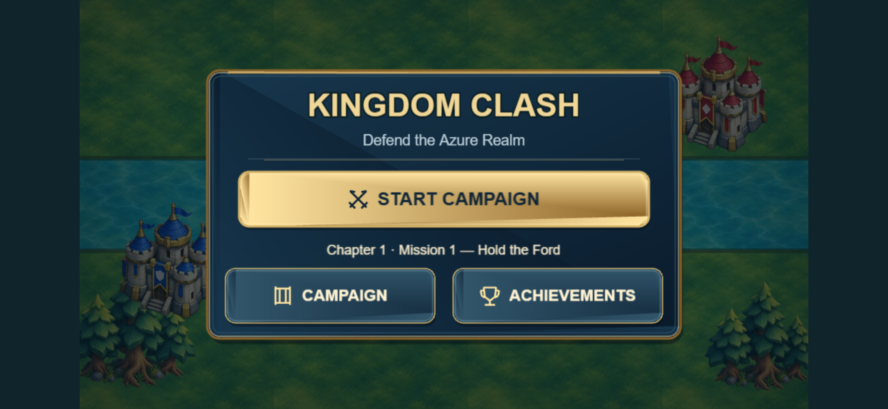
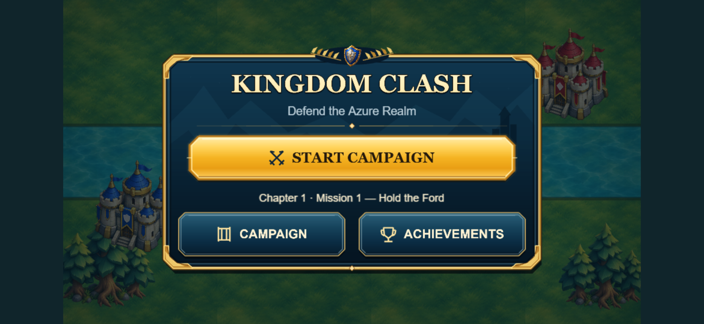
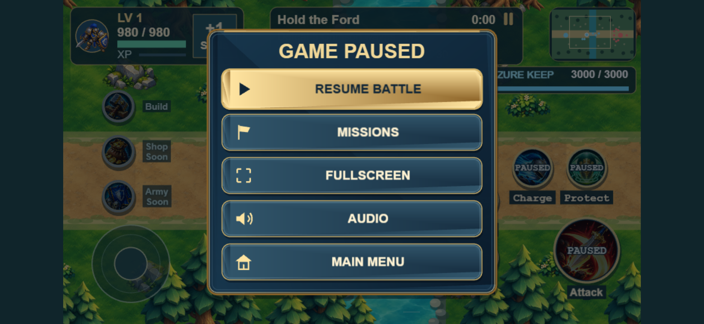
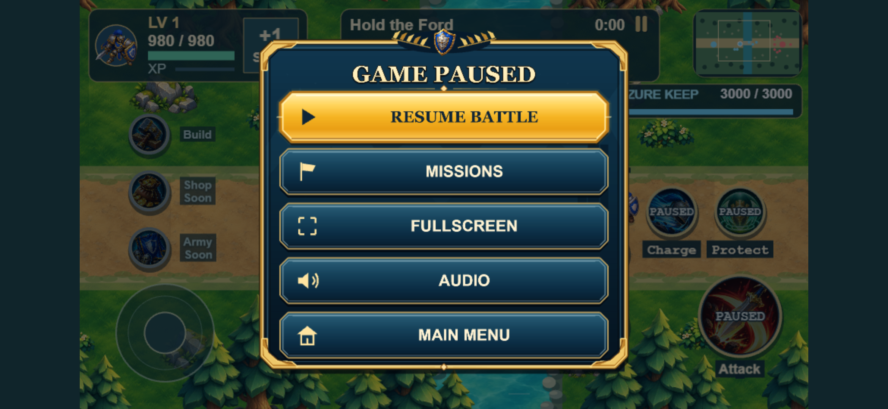
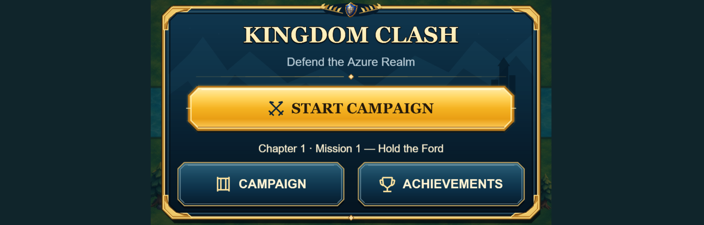
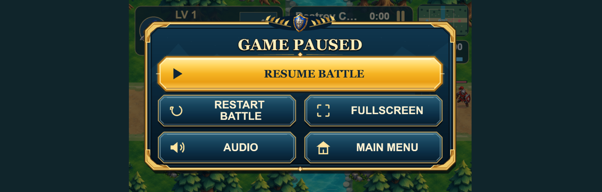

Same approved layout and actions. Updated menu-local gold frames, blue landscape silhouettes, existing Azure shield crest, serif gold headings and richer button finishes. Actual Chrome screenshots: 780×360 CSS pixels, DPR 3. No external artwork or new bitmap assets.






The fullscreen label follows real browser state. Campaign keeps Missions/Chapter Select; Quick Play keeps Restart Battle. PO visual review approved on 2026-11-04; commit, merge, push and automatic Production deployment authorized. See verification and file list.